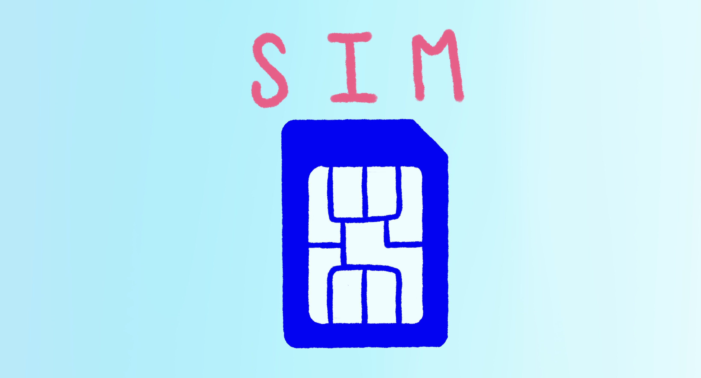

Tema 1 Módulo GSM
Una de las cosas más geniales del sistema GSM es algo llamado Módulo de Identidad del Suscriptor, pero todos lo conocemos como tarjeta SIM. Es como una tarjeta inteligente que guarda toda tu información, como tu número de teléfono y tus contactos.
¡Lo mejor es que puedes mantener toda tu información incluso si cambias de teléfono!
Pero los teléfonos GSM también tenían un problema. A veces, la señal que recibían era una mezcla de muchas señales diferentes que venían de diferentes direcciones. Esto es como si estuvieras en una habitación llena de gente y todos hablaran al mismo tiempo. Podrías escuchar todas las voces, pero sería difícil entender lo que cada persona está diciendo. ¡Eso es exactamente lo que le pasaba a los teléfonos GSM!
